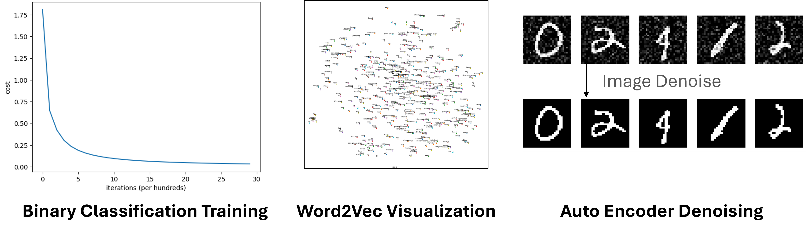
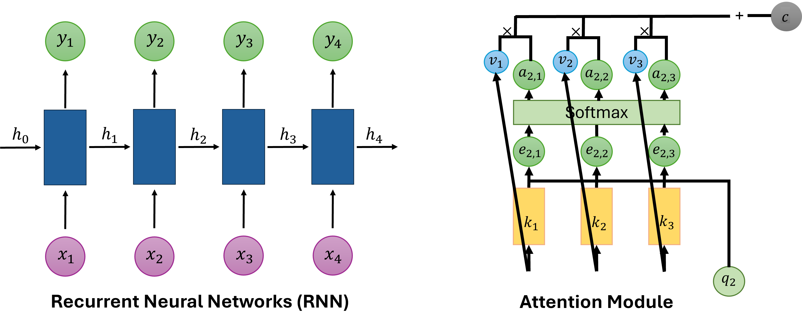

Deep Learning
Whether you are picking up machine learning for the first time or looking to solidify your foundations before diving into large-scale models, this teaching lab has you covered. Across 12 progressive labs you will move from classical algorithms all the way to modern generative architectures, writing real code, training real models, and visualising real results on AMD GPUs.



Goals
- Build classical ML algorithms (PCA, SVM, K-Means, Decision Trees, Regression) from first principles
- Implement a fully-connected neural network from scratch using only NumPy
- Train CNNs, autoencoders, and GANs in PyTorch for image tasks
- Work with sequence models (LSTM Seq2Seq) and word embeddings (Word2Vec)
- Construct a Transformer from scratch for text generation
Foundational Machine Learning (DL01 to DL05)
What this section covers
Dimensionality reduction, classification, clustering, and regression with from-scratch implementations.
DL01 — Principal Component Analysis (PCA)
Implement PCA from scratch using eigendecomposition on the Wine dataset.
DL02 — Support Vector Machine (SVM)
Apply an SVM classifier with kernel functions to a non-linearly separable dataset.
DL03 — K-Means Clustering
Implement K-Means step by step and animate how clusters evolve over iterations.
DL04 — Decision Tree
Train and visualise a Decision Tree classifier on the Iris dataset.
DL05 — Regression Model
Build a linear regression model to predict California housing prices.
Core Deep Learning (DL06 to DL09)
What this section covers
Neural networks from scratch, word embeddings, convolutional networks, and autoencoders.
DL06 — Neural Network from Scratch
Implement a fully-connected neural network using only NumPy with backpropagation.
DL07 — Word2Vec
Train a Word2Vec model on the Text8 corpus with Skip-gram and CBOW architectures.
DL08 — Basic CNN on CIFAR-10
Build and train a Convolutional Neural Network on CIFAR-10 in PyTorch.
DL09 — Denoising AutoEncoder
Implement MLP-based and CNN-based AutoEncoders to strip noise from MNIST digits.
Advanced Architectures (DL10 to DL12)
What this section covers
Sequence-to-sequence translation, GANs, and the Transformer.
DL10 — Sequence-to-Sequence (Seq2Seq) Translation
Build an LSTM-based Seq2Seq model for English-to-Chinese translation.
DL11 — Generative Adversarial Network (DCGAN)
Train a Deep Convolutional GAN on MNIST to synthesise realistic digit images.
DL12 — Transformer from Scratch
Implement a minimal Transformer for character-level language generation in PyTorch.
Explore the other teaching labs: Computer Vision, LLM from Scratch, Physics Simulation.